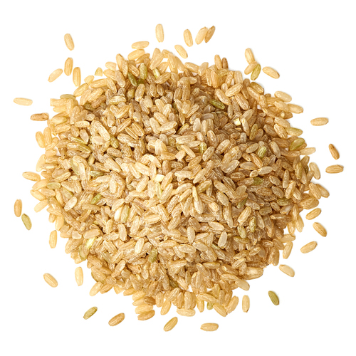
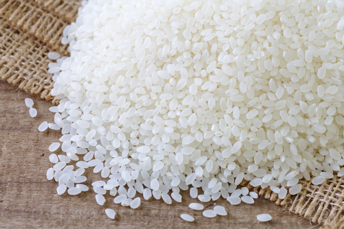
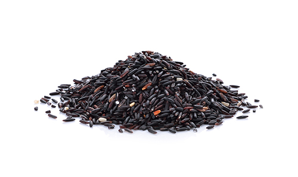
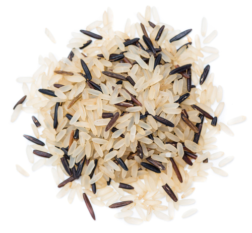
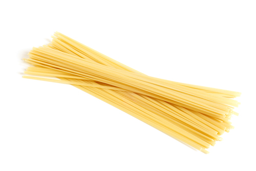
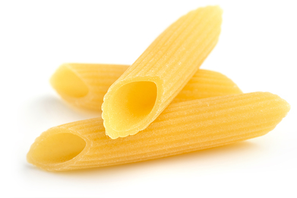
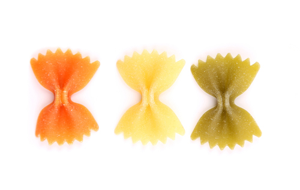
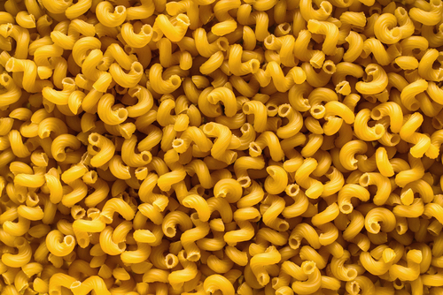
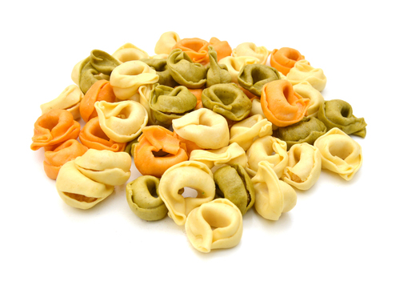

Task 1: Introduction to farinaceous ingredients
Click 'NEXT' to start.
Click 'NEXT' to start.
High quality stocks provide the base for:
|  |  |
|  |  |
Most countries have a code of practice for the welfare of animals – domestic poultry eggs must be labelled with the conditions under which the hens were kept:
Eggs have excellent nutritional value but hygiene must be considered. Contamination by salmonella is of primary concern, as faecal matter or dirt can transfer the bacteria through cracks in the shells of eggs. Commercially-produced eggs are sanitised very soon after laying but poor handling practices can still cause problems.
Salmonella
When storing eggs, ensure that they are kept separately from other foods such as salads and vegetables to prevent cross-contamination.
Sago:
Tapioca:
Sago and tapioca puddings are simple to produce by boiling the item with fresh fruit juice and once softened, some chopped fruit can be incorporated.
Polenta is based on corn (maize) meal which is cooked with water to a firm consistency using a ratio of 1:3 parts polenta to water, then cooled and cut into shapes and pan fried or grilled, similar to gnocchi alla romana.
Rye grain is stronger flavoured than wheat and is often used in baking for more solid-type breads.
Buckwheat is not wheat and is a soft grain that can be used to create soba noodles or produced into a batter for blinis, classical small pancakes served with caviar. Kasha is an Eastern European dish that is made from roasted grains.
Oats can be cooked using a ratio of 1:4 parts oats to water, whilst flakes use a 1:2 ratio.
Quinoa is a South American grain that has excellent nutritional benefits. It has the highest protein content of any grain and is rich in vitamins and minerals and fibre.
The variety of Italian pasta is enormous and each pasta is used with specific sauces to maximise the flavour of the finished dish as the shapes will absorb more or less sauce. Key groups for pasta are:
| Long extruded pasta | Short extruded pasta | Ribbon-cut pasta |
|---|---|---|
|
|
|
|  |  |  |
The variety of Italian pasta is enormous and each pasta is used with specific sauces to maximise the flavour of the finished dish as the shapes will absorb more or less sauce. Key groups for pasta are:
| Decorative pasta | Small-shaped pasta | Stuffed pasta |
|---|---|---|
|
|
|
|  |  |  |
Select suitable sauces to accompany pasta dishes. Most of them are based on traditional Italian dishes:
Gnocchi are:
The three gnocchi varieties vary in taste and appearance:
Piémontaise style:
Parisienne style:
Romana style:
The styles of dumplings vary based on the cuisine:
Amaranth
Like quinoa, amaranth is technically considered not a grain – it is the seed of the amaranth plant. Amaranth is gluten-free, high in protein, and contains lysine (making it a complete protein). Amaranth grains can be cooked whole in a pot, rice cooker or pressure cooker for a breakfast porridge or savoury ‘polenta’.
Barley
Barley has an especially tough hull, which when stripped removes some of the bran. There are hull-less varieties, most commonly found in natural-food stores and by mail order. Scotch barley and barley groats retain more of their bran than pearled barley. Barley contains beta-glucan, a soluble fibre attributed to lowering cholesterol, and protein comparable to wheat. It is not gluten-free. Barley is a versatile grain, good in soups, risottos and grain salads.
Buckwheat
The name buckwheat is a misnomer, as this grain is neither a wheat nor a buck; buckwheat seeds (or berries) come from a flowering plant in the rhubarb family. Kasha (or kashi) are toasted buckwheat groats (grain kernels that have their tough outer hull removed), most commonly cooked into hot cereal. Buckwheat flour makes tasty pancakes, blinis and bread. It is the primary ingredient in soba noodles. Gluten-free.
Cracked wheat and bulgur wheat
Cracked wheat is made by milling raw wheat berries into smaller pieces (‘cracking’), a process that reduces cooking time but still preserves the nutrient- and fibre-rich bran and germ layers. Bulgur is pre-cooked: wheat berries are parboiled, dried then broken into pieces. This makes a quicker-cooking grain with a nuttier flavour that is featured in popular Middle-Eastern dishes such as tabbouleh/tabouli and kibbeh. High in fibre, bulgur is not gluten-free. It makes great salads, pilafs, and side dishes; substitute bulgur for rice if you’re short on time, as an accompaniment to stir-fries, curries or stews.
Farro
Farro by another name would be wheat; it’s an ancient Italian strain called ‘emmer’. Choose semi-perlato (semi-pearled) over perlato (pearled), as it has more bran intact. Farro is easily confused with spelt berries; some cooks use them interchangeably. Farro is easy to cook: add it to a pot of boiling water, cook until tender (20 to 30 minutes), then drain. Add cooked farro to sautéed leeks for a simple side dish or turn it into a salad.
Kamut
Kamut is the only grain with a trademark and because of the trademark it’s always organic. It’s an ancient, or heirloom, wheat grown in Montana. It’s high in protein and vitamin E. Some describe it as buttery and sweet. As grits, it makes a tasty hot cereal. You’ll find it in every form you find wheat: berries, cracked, rolled, flakes, puffed and ground into flour.
Millet
Millet, gluten-free and comparable to wheat in protein, is a popular grain throughout the world, except in the United States, where it is mostly sold to stock bird feeders and throw at newly- weds. In the pot, however, millet is a mild-tasting, versatile grain, one that benefits from a bit of toasting beforehand. Cook millet into breakfast porridge or grits, savoury side dishes, croquettes and meat-free terrines.
Oat groats
Oat groats are hulled oat kernels, in their purest form before rolled, steel-cut, or milled into flour. Unlike many grains, oats are rarely processed to remove their germ and bran, making them a whole grain in most permutations. Higher in protein than most types of wheat, oats contain B vitamins and beta-glucan, a soluble fibre attributed with cholesterol-lowering properties. Sweet and nutty, oat groats make a delicious breakfast: boil one part oats to two parts water for about 40 minutes.
Polenta
Polenta and grits are both ground corn. They differ in how they’re ground (both the method and the fineness of the grind). Avoid de-germinated cornmeal (the germ has been removed to increase its shelf life), as it’s not a whole grain. Polenta makes a delicious base for sauces (ragu, mushroom, gorgonzola) and sausages. It’s also good grilled or layered into lasagne-like dishes.
Popcorn
Corn or popcorn stands alone as a grain because it’s eaten both fresh and dried. Corn in America is treated like a vegetable. It is recognised as a grain by its derivatives: cornbread, tortillas, hominy, polenta and grits. Popcorn kernels are the grain in its entirety — truly a whole grain, offering a good fix of protein and fibre. Two cups of popcorn yield a serving of grains and a tasty snack.
Quinoa
Quinoa is the wonder grain: high in protein, gluten-free, easy to digest and quick to cook. Be sure to rinse it before cooking; quinoa is coated in saponin, a natural bitter-tasting insect repellent. Rinse and drain it, then cook it like pasta (in a large pot of boiling water) or rice (2 parts water to 1 part grain). It makes a delicious breakfast (with sweet or savoury additions), pilaf and salad. It can also be added to baked goods.
Red quinoa
Red quinoa is similar to the other quinoa varieties: high in protein, gluten-free, easy to digest and quick to cook. Red quinoa is predominately grown in Bolivia; other quinoas come mostly from Bolivia, Peru and Ecuador and more recently, the United States. Rinse and cook red quinoa as you would other varieties: for breakfast, in salads, and mixed in with other grains for polenta and pilaf-like side dishes.
Sorghum
You may not be familiar with sorghum molasses, which, as it turns out, is made from the non-grain variety of sorghum. The grain variety of sorghum is a good source of protein and is gluten-free. Similar to millet in texture, sorghum benefits from being toasted first before cooking. Sorghum can be cooked into porridge, ground into flour for baking, or popped like popcorn. Heat a small amount of oil in a pot, add sorghum, cover and cook until all the grains are popped.
Spelt berries
Spelt, a variety of hard wheat, is higher in protein than more common varieties of wheat. It can be interchanged with most wheat recipes, as berries (think grain salad) or flour (try pancakes). To cook spelt berries, soak them overnight first or do a quick soak by pouring boiling water over the berries and allowing them to sit for an hour. Simmer the soaked berries in a covered pot (1 cup berries to 2.5 cups water) until tender, 30 to 40 minutes. Frika or gruenkern is a green (as in unripe) spelt with a smoky flavour.
Teff
The name ‘teff’ refers to the grain’s miniscule size; teff comes from the word ‘teffa’ or ‘lost’ in Amharic, the official language of Ethiopia. Teff is a kind of millet that possesses more iron and calcium than other whole grains, as well as all eight essential amino acids. Whole teff can be cooked into porridge or polenta-like dishes, as well as being added to baked goods. Teff flour is the primary ingredient of injera, a spongy Ethiopian flatbread.
Rolled triticale
Triticale is a hybrid of rye and durum wheat and possesses more protein and amino acids than either of these individual grains. Because it’s easily grown without pesticides and commercial fertilizers, it’s a poster child for sustainable and organic farming. The question remains, though: what do you do with it? Substitute triticale berries for other wheat and rye berries in salads, soups and stews. Rolled triticale can be cooked like oatmeal or folded into a batch of granola or flapjacks.
Wheat berries
The terms ‘hard’ and ‘soft’ refer to the protein and gluten content of wheat. Hard wheat is made into pasta and bread flour, while soft wheat (lower in protein and gluten) is milled into pastry flour. All wheat berries — hard, soft, spelt, and kamut — can be cooked whole for a variety of sweet and savoury dishes: breakfast and side dishes, stews and salads.
Arborio

Arborio is the most widely available Italian rice. Considered a medium grain, it is popular in risotto and is suitable for pilafs and rice puddings too. When making risotto or pilafs, fry the grains briefly in oil or fat to keep the grains separate when cooked. Italian rices are graded according to quality. Buy the top grade, ‘superfino’, for risotto.
Carnaroli
This medium-grain rice from Italy is difficult to grow. It has a high starch content that allows it to absorb liquids and flavours while keeping its shape. It resists overcooking and yields a creamy consistency that makes it the preferred rice for classic risotto.
Valencia
A short grain rice, the is the Spanish rice traditionally used to make paella rice. It’s different from other short-grain rices because it absorbs moisture without breaking down; when fully cooked, the individual grains of rice remain whole. Arborio and another medium grained Italian rice can be used as a substitute but will yield a creamier dish. Use Valencia rice to stuff dolmas or other vegetables.
Red Camargue
A little known red rice from the Camargue region of southern France, this rice has a delicious earthy flavour combined with a little nuttiness. When cooked, it is slightly sticky. Cook the rice as you would pasta, in a good quantity of salted water or broth. When the rice is al dente, drain it, then dress it with olive oil, salt, pepper and chopped fresh herbs.
White long-grain rice
The most versatile of all rices, white long-grain rice is the standard rice consumed in North America. Sometimes called Carolina rice, its fluffy texture and neutral flavour is perfect for Southern classics like dirty rice and jambalaya, or in pilafs and for fried rice.
Brown long-grain rice
Brown rice has the germ and bran intact, making it rich in fibre, minerals and vitamins. Most rices are available in white or brown varieties but as it is a whole grain, brown rice is considered a healthier choice than white. Long-grain brown rice is high in amylose, resulting in a firmer, more absorbent kernel when cooked. Cooked long-grain rices are therefore fluffier than short-grain rices.
Jasmine
A medium- to long-grain rice originally from Southeast Asia (most commonly Thailand but also Vietnam and Cambodia), jasmine rice is also grown in the US. So aromatic it was named after the sweet-smelling jasmine flower, this rice has clear crystalline grains and cooks to a soft, slightly clingy texture. Hom mali, a strongly scented hybrid developed in Thailand, is widely available in Asian markets in the United States. Jasmine rice is the ideal rice for fried rice.
Basmati
An aromatic rice, basmati grows in the foothills of the Himalayas in northern India and Pakistan, as well as some parts of the US. It is a very long, needle-shaped rice, and elongates even more when cooked. Basmati is available white or brown (usually American-grown) and is ideal for north Indian and Persian cooking, since the grains stay separate and firm when cooked. Use it for biryanis or tahdig (a Persian rice dish with a crispy bottom), or pair it with South Asian curries. Dehra dun from India is the most prized of the basmati varieties and is available at well-stocked South Asian markets.
Brown short-grain rice
This rice is just as nutritious as its long-grain cousin but has a chewy, stickier texture because it possesses more amylopectin. Brown rice whether long or short can be substituted in any dish that calls for white rice. Just vary the rice-to-water ratios and cooking times.
Japanese/sushi rice
Short- to medium-grain rice, the raw grains of sushi rice are slightly glassy and translucent. Although the grains still separate when cooked, this rice has a stickier texture in comparison to long-grain rice. That’s why it’s often called sticky rice. Rice grown in Japan is not exported. Traditionally, Japanese rice is washed until the water rinses clear, then drained before cooking.
Bhutanese red rice
Bhutanese red rice is a medium-grain rice that is slightly milled so the red of the outer bran layer is still on the rice in patches. The cooked rice is pale pink with a soft and slightly clingy texture. Other countries, including Thailand, Vietnam, and India (Kerala red rice is needle-thin and long like basmati) also produce similar red rices. Because it is semi-milled, it cooks in about 20 minutes.
Chinese black rice
In ancient China, black rice was considered the finest grain, reserved for the emperor. Hence its trademarked name of ‘Forbidden Rice’. Rich in anthocyanins and antioxidants, this medium-size heirloom rice has a dark purple colour and also contains more vitamin B, niacin, vitamin E, calcium, magnesium, iron and zinc than white rice. Grown in northern China, black rice is traditionally made into congee but its roasted nutty taste is delicious in salads and fried rice too. A whole grain, black rice has a white kernel underneath the black-coloured bran layer. Cook it as you would brown rice.
Thai black glutinous rice
This rice has a sweet, nutty taste and, when cooked, turns a deep purple colour. Boil with water and palm sugar to make a sweet porridge, and drizzle with coconut milk.
White long-grain glutinous rice
At the Asian market, this rice is often sold in bags labelled ‘malagkit’, its Tagalog name, even though the rice most likely comes from Thailand. In the Philippines, malagkit is cooked in coconut milk and then wrapped in banana leaves. Also a staple in northern Thailand and Laos, it is served with curries and grilled meats, and as a dessert of sticky rice with mango. Before cooking (steaming is the ideal method), wash the raw rice well and soak it overnight.
White short-grain glutinous rice
Most often sold as Japanese sweet rice (mochi gome), this rice is pounded into flour for making mochi, the traditional rice cakes eaten at New Year, and an array of Japanese sweets and confections. When raw, the white glutinous rice is opaque and white. It turns translucent and clumps together after cooking and is slightly nutty and sweet. Brown sweet rice is also available.
Wild rice
Wild rice is technically not a grain but the seed of an aquatic grass. It is high in protein and dietary fibre and low in fat. It’s also a good source of minerals and B vitamins. Native to the Great Lakes region, as well as the Gulf Coasts, wild rice is now cultivated in California and Oregon. Wild rice can be eaten on its own or blended with other rices. Try it in salads, stuffings and pilafs. Using a 1:3 rice-to-water ratio, cook wild rice in a large saucepan of lightly salted boiling water until tender, 45 to 55 minutes. Drain.
Acini di Pepe
Acini di pepe (‘peppercorns’) are perfect to use in soup recipes. Include them with plenty of vegetables in broths and you’ll have a wonderful dish.
Anelli
Small rings of pasta. They can be used in various soups and are also a complement to fresh vegetables in a number of salads. The smaller version, anellini, can also be used as an alternative.
Angel hair
Long, thin noodle with a round shape. It can be used with light sauces and vegetables as well as traditional Italian sauces. Although it resembles another spaghetti, another long and thin pasta, angel hair is much more fine.
Bucatini
This straw-like pasta is shaped like thick spaghetti but is hollow in the center. Bucatini is the perfect choice for nearly any sauce or it can be baked in casseroles or stir fried in dishes. Try it with different lean proteins and sauces for a change of pace.
Campanelle
Campanelle (‘bells’) pasta resembles a small cone with a ruffled edge. Campanelle pasta can be paired with lean proteins, vegetables or sauces of any base. These shapes can also be a treat in a cold pasta salad.
Casarecce
Casarecce pasta is shaped like a very narrow, twisted and rolled tube. This pasta is best used when served with chunky sauce and can be used in a variety of casserole dishes.
Cavatappi
Meaning ‘corkscrew’, this tight spiral shape locks in the flavour, allowing the pasta to pair with both simple and sophisticated sauces. Pair cavatappi with sauces of any base or partner it with vegetables or lean protein. This pasta is sure to impress. Also, these shapes are great when used in pasta salads.
Cavatelli
Cavatelli resembles tiny hot dog buns. These shapes are commonly served with thick, chunky sauces or in pasta salads. Cavatelli pairs nicely with meat, cream, seafood or vegetable sauces.
Conchiglie
These ‘shells’ (small, medium or large) make a great addition to soups or work as the base of a wonderful salad. For a fun twist on a time-honoured tradition, try remaking your favorite macaroni and cheese using shells. Large shells are best when stuffed with your favourite mixtures of cheese, meat and vegetables. Stuff with meat-flavoured with taco seasoning, top with salsa and bake for a delicious Mexican dish or create your own stuffed treat.
Ditalini
The ‘little thimbles’ are a versatile shape which can be used as the base of any dish. Bake it, stir it into soups, or create great salads and stir-fry dishes.
Egg noodles (medium and wide)
From the German ‘Nudel’, this size of egg noodle can be baked, tossed in soups or salads, or topped with cream, tomato, cheese or meat sauces. Go beyond the traditional stroganoff and use wide egg noodles to create soups, salads and casseroles. Or top with a variety of sauces.
Elbow macaroni
A highly versatile shape that can be topped with any sauce, baked or put in soups, salads and stir-fry dishes. Elbow macaroni is traditionally used to make macaroni and cheese but why not change it up and add in some seasonings, proteins or veggies for a delightful dish?
Farfalle (Bow Ties)
Farfalle (meaning ‘butterflies’ or ‘bow ties’) brighten any meal with their interesting shape. They are thick enough for a variety of sauces or a perfect addition to a number of salad or soup recipes. Farfalline are a smaller version. This versatile shape can be used as the base of any dish. Bake it, stir it into soups or create great salads and stir-fry dishes.
Fettuccine
This thick ribbon-like pasta is often paired with thick meat-based sauces. One of the more popular pasta recipes is the rich fettuccine alfredo sauce.
Fideo
Short thin strands of pasta that are slightly curved. Fideo pasta is commonly partnered with vegetables and lean proteins to be used in various soup recipes.
Fusilli
This ‘twisted spaghetti’ is a long, spiralled shape which can be topped with any sauce, broken in half and added to soups or turned into a beautiful salad. Fusilli also bakes well in casseroles.
Gemelli
Meaning ‘twins’, these add a touch of style to any dish with this distinctive shape. Gemelli pairs nicely with meat, cream, seafood and vegetable sauces.
Gigli
Gigli (‘lilies’) are fluted edged pieces of pasta that have been rolled into a cone-shaped flower. Gigli is ideal for heavier sauces, like cheese, meat and tomato or it is a perfect addition to a number of casseroles.
Lasagne
These wide flat-shaped pasta sheets are arguably one of the oldest types of pasta. The word ‘lasagna’ refers to a dish made with lasagne, the pasta sheets alternating with sauces and other ingredients.
Linguine
These ‘little tongues’ are a great shape to complement a variety of sauces. Also a good choice for salads and stir-fry dishes.
Manicotti
Stuff manicotti (or ‘small muffs’) with a mixture of meat, cheese and vegetables, top with your favourite sauce and bake.
Orecchiette
These ‘little ears’ are commonly served with thick, chunky sauces or in pasta salads.
Orzo
This small ‘barley’ or grain-shaped pasta can be topped with any sauce, added to soups or baked as a casserole. Perfect as a side dish as well as a main course.
Pappardelle
This Italian flat pasta is usually cut into a broad ribbon shape. Its width is between lasagne and tagliatelle. Pappardelle goes well with heavy rich sauces. It can be very popular during the winter months.
Pastina
This tiny pasta is perfect for children. They are traditionally used in soups with Italian and Turkish cuisine.
Penne
Meaning ‘quills’ or ‘feathers’, penne complement virtually every sauce and are exceptional when paired with a chunky sauce. Penne pairs nicely with chunky meat, chunky vegetable, cream or oil-based sauces. These shapes are also great for baked dishes.
Mostaccioli
Meaning ‘small moustaches’, this tubular pasta complements a variety of sauces and is frequently used in salads, baked in casseroles or made into stir-fry dishes.
Pipe rigate
A hollow curved pasta that resembles a snail shell. This shape has a wide opening at one end and the other end is flattened. Pipe rigate pairs nicely with chunky meat, chunky vegetable, cream or oil-based sauces. The pipette rigate shape is a smaller version of pipe rigate. Pipette rigate pairs nicely with chunky meat, chunky vegetable, cream or oil-based sauces. Also, these shapes are great for baked dishes.
Radiatori
This ruffled, ridged, ‘radiator’ shape adds elegance to any sauce. It also works well baked in casseroles or used in salads and soups.
Ravioli
Ravioli are square or round pillows of pasta that have a filling consisting of ingredients such as cheese, meats, vegetables and seasonings. Ravioli can be served with a red sauce or it can be served with butter, oil or cream.
Reginette
Reginette is a wide, flat ribbon pasta that has rippled edges on both sides. This shape is similar to lasagne.
Rigatoni
Rigatoni’s ridges and holes are perfect with any sauce, from cream or cheese to the chunkiest meat sauces.
Rotelle
Meaning ‘little wheels’, rigatoni’s cartwheel shape is not a classic Italian shape but due to the variety of colour and entertaining shape they are a crowd favourite. Because the spokes of the wheels are good for capturing flavour, these shapes are easy to pair. Rotelle pasta pairs nicely with meat, cream, seafood or vegetable sauces.
Rotini
‘Spirals’ or ‘twists’, rotini’s twisted shape holds bits of meat, vegetables and cheese, so it works well with any sauce or you can use it to create fun salads, baked casseroles or stir-fry meals.
Spaghetti
One of the world’s favourite pasta shapes, spaghetti is the perfect choice for nearly any sauce or it can be used to make casseroles or stir-fry dishes. Go beyond tomato sauce and explore the multitude of options.
Tagliatelle
The Tagliatelle pasta is long and ribbon-like in shape, very similar to the fettuccine. It can be served with an array of sauces but a classic meat sauce tends to be the way to go.
Tortellini
Tortellini is a ring-shaped pasta typically stuffed with meat, cheese or vegetables. Tortellini is commonly served in a broth or cream sauce.
Tortiglioni
Tortiglioni is narrow, tubular pasta. This shape is commonly used to add decoration to salads or paired with a simple sauce.
Tripolini
Tripolini is a tiny bow tie-shaped pasta used in soups and salads or paired with a simple sauce.
Vermicelli
Vermicelli (‘little worms’) is slightly thinner than spaghetti. It is good topped with any sauce or as a salad or stir-fry ingredient.
Ziti
Ziti (‘bridegrooms’) is a medium-sized, tubular pasta shape. It is perfect for chunky sauces and meat dishes. It also makes wonderful salads, baked dishes and stir-fry meals.
You have now reached the end of this unit and are ready to progress to the media content or quiz. You can do this by clicking on the tabs below. Remember that you can revisit this unit to revise at any time.